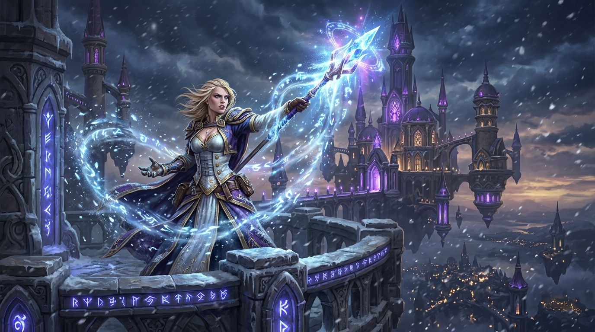
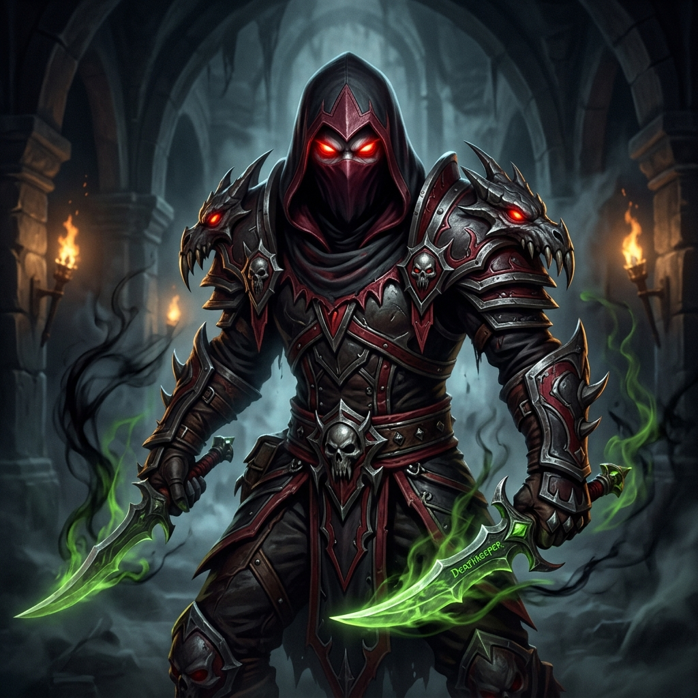
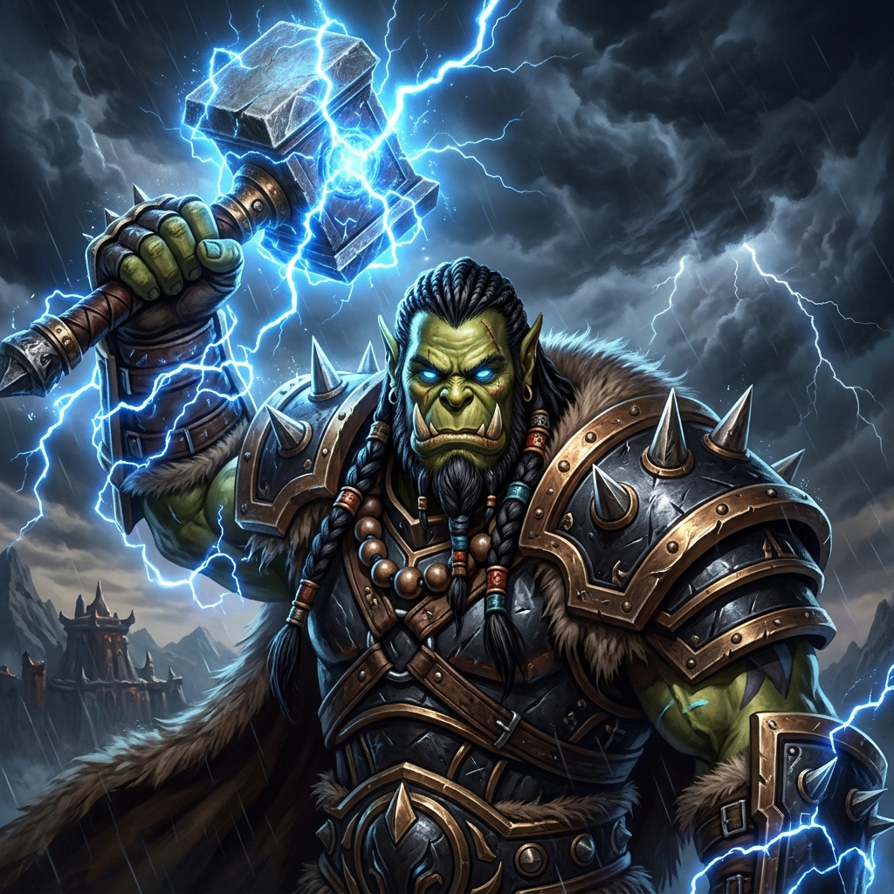
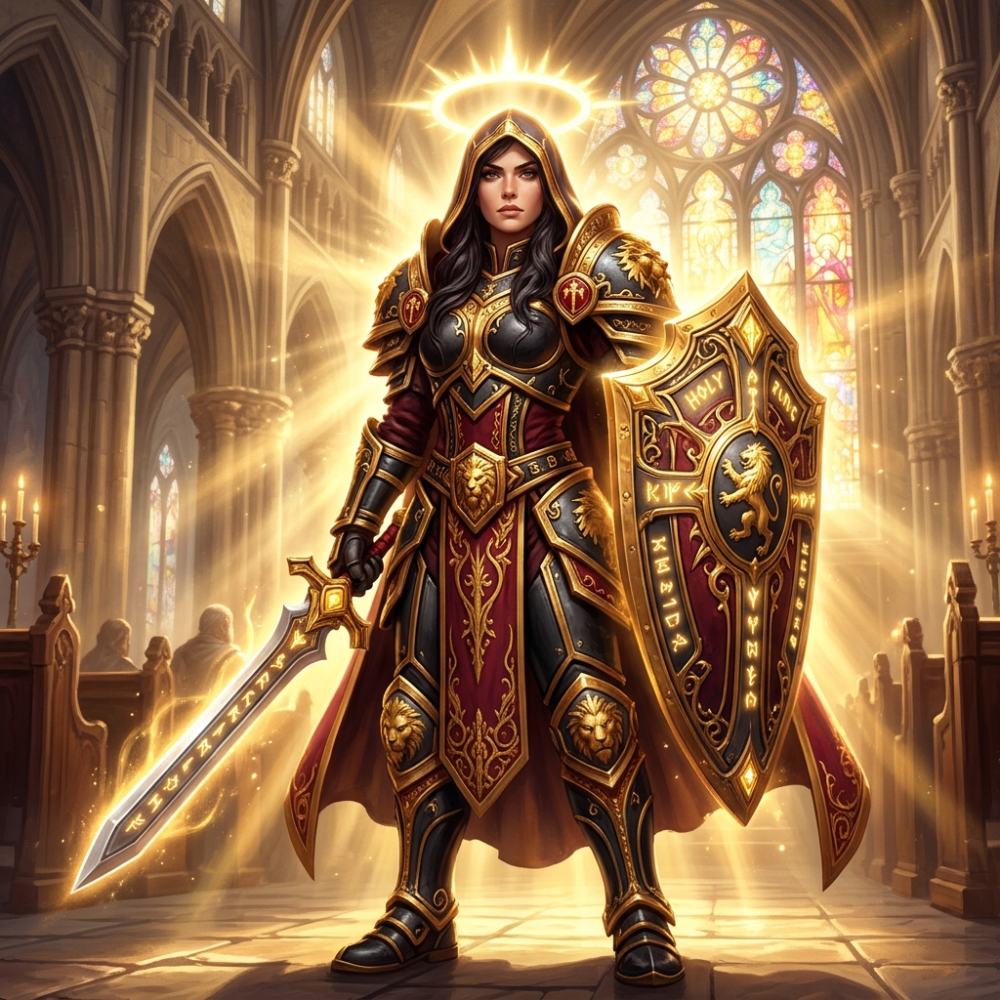
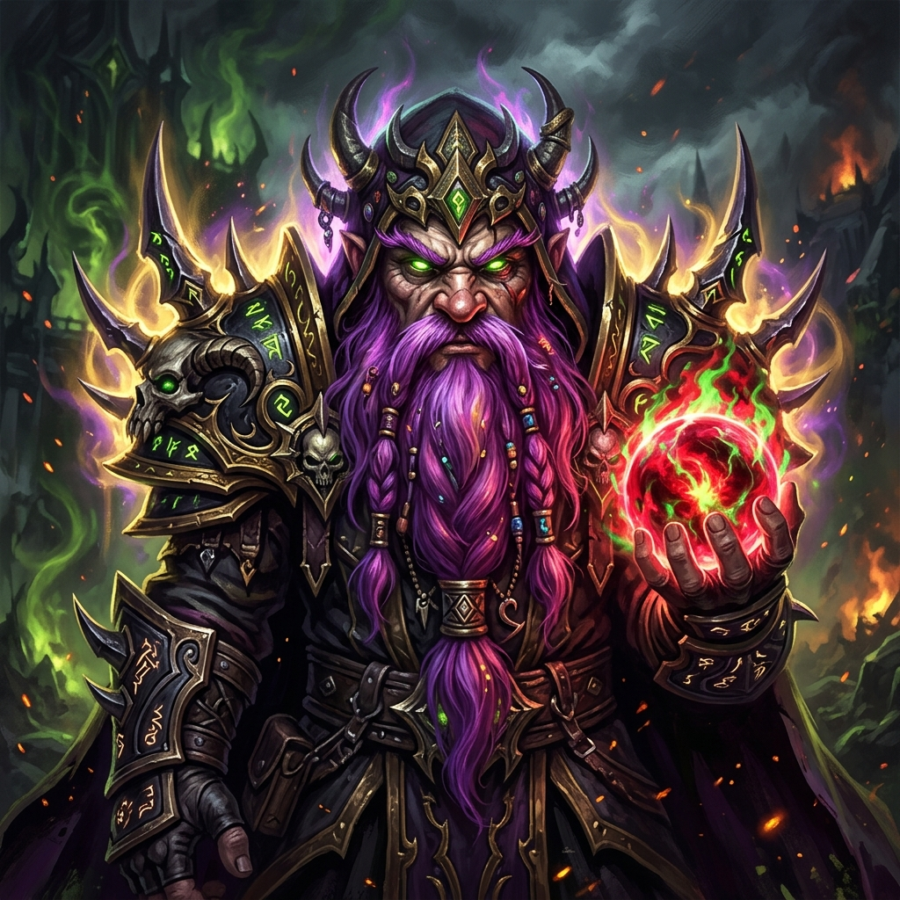
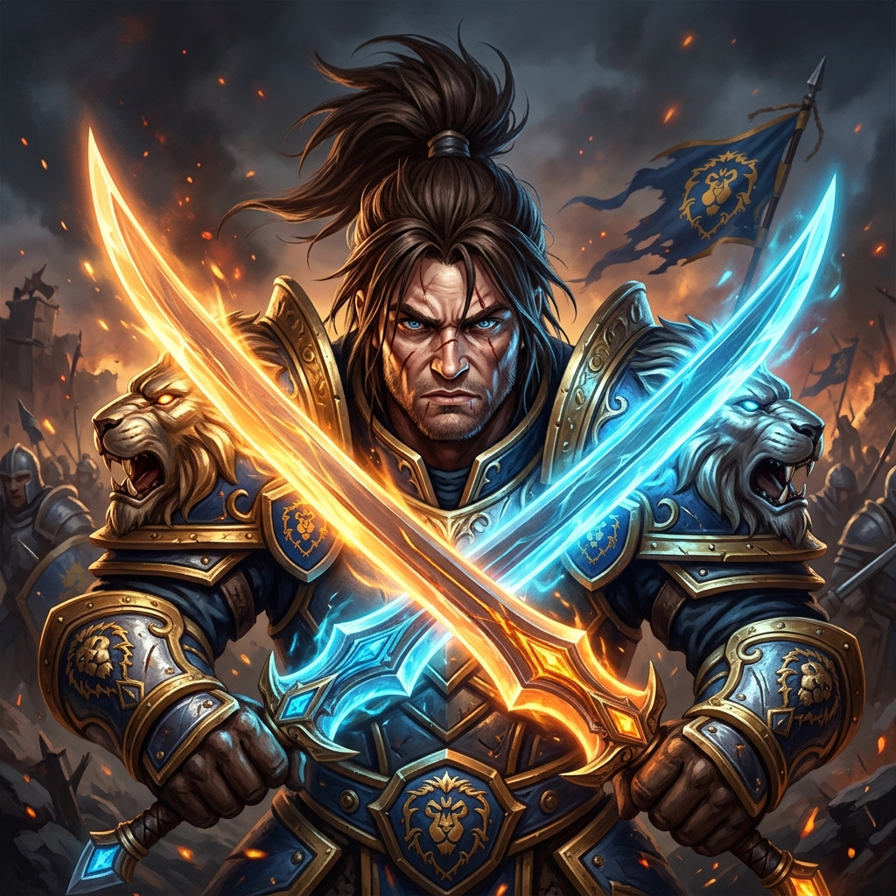
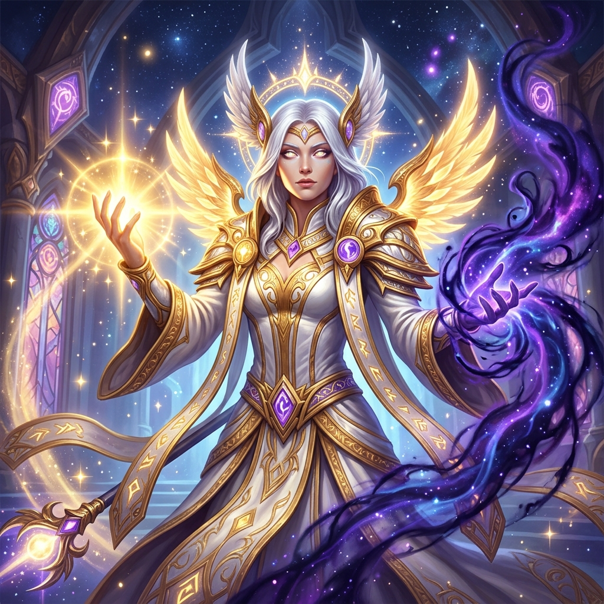
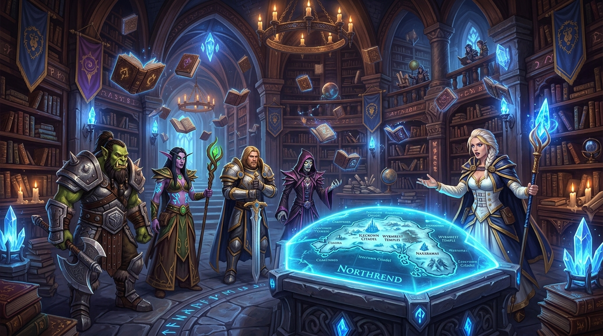
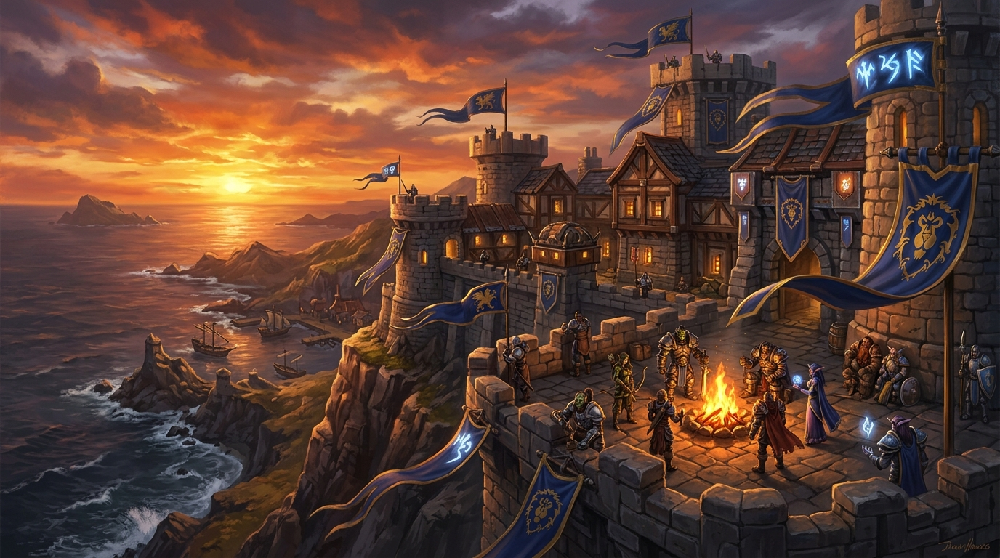
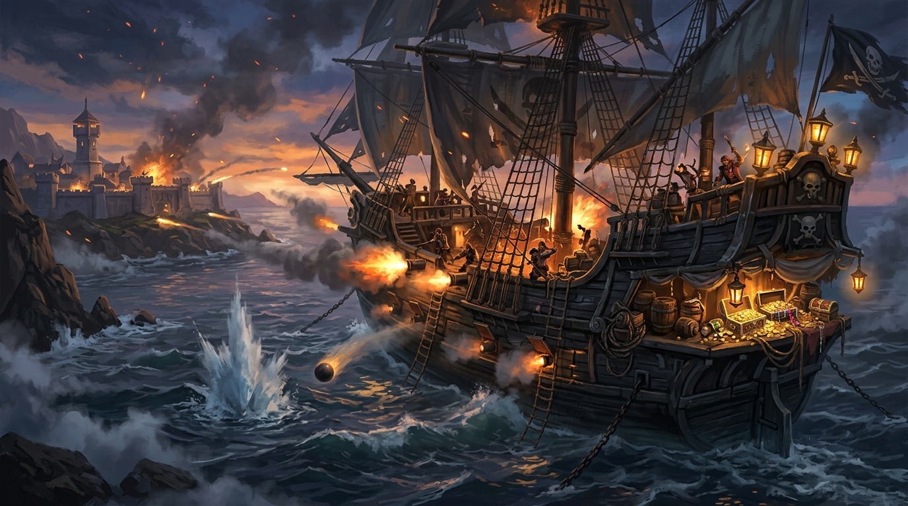

Inteligencia Artificial
Lore Viviente & HeroBots
Lady Jaina, Thrall y Varian recuerdan tus hazañas, responden a tu voz y luchan a tu lado con IA multihilo táctica avanzada.
Explorar Héroes & Lore ➔
El primer servidor de World of Warcraft donde las leyendas tienen conciencia e inteligencia artificial propia.
Camina junto a Lady Jaina Valiente en Theramore y forja tu propio destino en un Azeroth vivo.
Conquista Baluartes de Hermandad y vive la experiencia definitiva en PC y Android.
Project Jaina no es un servidor más. Es una plataforma viva construida sobre cuatro pilares tecnológicos y de diseño que transforman World of Warcraft 3.3.5a para siempre.
Lady Jaina, Thrall y Varian recuerdan tus hazañas, responden a tu voz y luchan a tu lado con IA multihilo táctica avanzada.
Explorar Héroes & Lore ➔24 GB de texturas remasterizadas, interfaz moderna Dragonflight y motor DirectX 9 calibrado a cero crashes de memoria virtual.
Ver Tecnología & AddOns ➔Reino 1 JainaCore (Vanilla Cap 60) con progresión canónica y alta disponibilidad multi-nodo. Subastas vivas, cross-faction y balance económico absoluto.
Ver Fases & Eras ➔Descarga directa de lanzador oficial (~20 MB), cliente full HD y edición optimizada para celulares con palanca táctil 360°.
Descargar & Conectar ➔Diseñado para que cualquier aventurero esté dentro de Azeroth en menos de dos minutos.
Solo necesitas un nombre de usuario y una contraseña. Cero datos bancarios, sin esperas, protegida por criptografía SRP-6 instantánea.
Crear Cuenta en 15 Segundos ➔Descarga el lanzador ligero (~20 MB) para autoconectar en 1 clic si ya tienes WoW, o el cliente completo HD remasterizado.
Ver Opciones de Descarga ➔Inicia sesión con tus credenciales y camina junto a Lady Jaina Valiente en Theramore. ¡Azeroth te está esperando!
Conocer Detalles de la Beta ➔Explora cada subsistema de Project Jaina navegando por los apartados interactivos sin saturación. Selecciona una pestaña para descubrir sus características.
Entidades autónomas con IA neuronal viva. Lideran hermandades soberanas, asedian fortalezas y protegen el Reino de Theramore. Haz clic en cualquiera para inspeccionar su Paperdoll de 18 ranuras con equipamiento BiS en la Armería Oficial.

Líder soberana de Theramore. Equipada con el set Tier 2 Netherwind completo y el legendario Bastón de la Llama de las Sombras de Alanegra.

Asesino Elfo de Sangre con 18/18 BiS Tier 2 Bloodfang, Hoja de Perdición y Diente de Can del Núcleo. Rotación táctica de sigilo.

Guardián de los elementos y Jefe de Guerra de la Horda. Maestro del Tier 2 Ten Storms y portador del mítico Martillo Maldito (Doomhammer).

Vanguardia inamovible con armadura sagrada Tier 2 Judgement y el Baluarte Reforzado de Elementium. Guardiana de la Luz en primera línea.

Maestro de las sombras y el fuego vil. Equipado con el set Tier 2 Nemesis completo, el Cráneo de los Man'ari y pacto demoníaco supremo.

El Lobo Fantasma de Ventormenta. Portador de las espadas gemelas Shalamayne y blindado con el Tier 2 Wrath de Alanegra.

Canalizadora divina entre la Luz Sagrada y el Vacío. Revestida con el set Tier 2 Transcendence y el legendario Báculo de la Bendición.
Consulta en tiempo real más de 50,000 ítems indexados directamente desde nuestra Base de Datos. Explora monturas míticas, alas cosméticas, sets Tier 2 y los 4 enclaves territoriales de hermandad con tooltips interactivos de Wowhead.
Inteligencia artificial generativa integrada en el núcleo del juego, sin latencia y con memoria persistente

Lady Jaina procesa lenguaje natural en tiempo real con memoria persistente. Recuerda tus hazañas pasadas, evalúa tu afinidad de facción y reacciona a tus palabras con coherencia canónica absoluta.
Añade a la Archimaga a tu escuadrón directamente desde el botón de la interfaz sin comandos GM ni configuraciones complejas. Equipada con Archus, Gran Báculo de Antonidas y un grimorio de 499 hechizos, asistirá tus raids adaptando dinámicamente sus rotaciones de Escarcha y Arcano.
Escucha la voz de Jaina y de otros aventureros con cálculo 3D en tiempo real según su distancia y orientación en el mundo de juego. Comunicación inmersiva integrada de forma nativa en el cliente.
Desafíos Hardcore, Ironman y sistema de progresión de temporada integrado con la Suite de AddOns oficiales remasterizados exclusivos para la experiencia Project Jaina.
Compañeros tácticos con IA de raid avanzada: esquivan charcos de fuego en el suelo, flanquean dragones para evitar coletazos, coordinan interrupciones de casteo en cadena, reaparecen en la entrada de mazmorra sin dolencia de resurrección y conversan con naturalidad en el chat de grupo.
Innovación radical en Azeroth: fortines para hermandades sin microtransacciones y batallas dinámicas en mar abierto

🏰 BALUARTES DE HERMANDAD V2.5 ● 6 ENCLAVES EN VIVOTu hermandad ya no necesita confinarse en las capitales. Conquista enclaves estratégicos en el mundo abierto, iza los estandartes de tu facción y conviértete en el señorío de la región.

🏴☠️ COMBATE NAVAL DINÁMICO V2.5 ● CICLO: CADA 45 MINUn auténtico buque corsario fondea en la Bahía de Theramore. Las campanas de costa resuenan alertando a los defensores en un evento de mundo vivo dinámico sin precedentes.
«Hijo mío... el día que naciste, los mismos bosques de Lordaeron susurraron tu nombre...»
El avance de tu personaje, profesiones, monedas y hermandades se conserva permanentemente al 100% para la apertura oficial.
Todo lo que consigas durante la Beta se mantiene de forma definitiva. ¡Tu esfuerzo nunca se perderá!
¿Encontraste un bug? Repórtalo con /ticket en el juego y reclama títulos y cosméticos de apoyo.
Red global Anycast transparente sin VPNs, con soporte para navegador web y cliente tradicional de PC.
🎮 ¡La Fase Beta Abierta ya está activa y jugable hoy! Cero reinicios: todo tu avance se conserva al 100%.
El portal de Project JAIna abrirá sus puertas a aventureros de todo el mundo. Prepara tu hermandad y únete a la revolución de Lore Viviente con IA Neuronal.
Evolución canónica de contenido, bandas y temporadas gobernadas por el Motor de Lore Viviente de Gravity AI
Elige tu senda en Azeroth: desde la experiencia clásica Blizzlike hasta la muerte definitiva con herencia de almas y protección divina anti-desconexión.
La experiencia canónica y progresiva de Wrath of the Lich King 3.3.5a HD. Ideal para disfrutar la historia, hermandades y raids sin riesgo de pérdida de personaje.
Muerte Permanente estricta. Si tu salud llega a cero por cualquier motivo, tu alma queda sellada para siempre en el mundo terrenal como espíritu errante.
La prueba máxima de autosuficiencia y templanza. Una sola vida combinada con el aislamiento económico y social absoluto en las tierras de Azeroth.
Metamorfosis necrótica progresiva. Inicias con 3 vidas. Cada muerte altera tu carne convirtiéndote en no-muerto con debuffs profanos acumulativos.
Para los nostálgicos del esfuerzo genuino. Experiencia x1 estricta en misiones, monstruos y profesiones exactamente como en los servidores de 2008.
En Project Jaina, tu esfuerzo jamás se pierde. Si un héroe en modo Hardcore, Ironman o Die & Rise cae en batalla tras superar el nivel 1, su esencia bendice tu cuenta: tu siguiente personaje recibirá automáticamente el bono Herencia x2 XP hasta alcanzar el nivel máximo que logró el héroe caído.
Desarrollado bajo estándar L9: Si el servidor detecta una pérdida súbita de paquetes o desconexión abrupta de tu conexión a internet mientras estás en combate peligroso, el núcleo activa de inmediato el Santuario Divino de Inmunidad Temporal, impidiendo que mueras injustamente por problemas de ISP.
Economía viva y sostenible de circuito cerrado: botín justo, casas de subastas dinámicas con liquidez garantizada y cosméticos de prestigio.
Moneda especial canjeable en la Tienda Visual 3D interactiva (comando /alas o NPC Kaelia) para lucir 17 tipos de alas celestiales, auras místicas y bonus de 3 días.
Divisa oficial de conveniencia y soporte comunitario. Acumulable en bolsas hasta 10,000 unidades y utilizable dentro y fuera del juego.
ProjectJaina_Store para comprar monturas, compañeros y bolsas.
El equivalente canónico al WoW Token oficial de Blizzard. Diseñado para conectar la economía de oro del juego con los puntos de donación de la web.
Respaldado por 95_AuctionHouse_Economy_Engine.lua: Más de 1,200 ítems sembrados en un mercado unificado cross-faction. Cuando publicas tus materiales de profesión recolectados (menas, hierbas, telas), un agente comprador inteligente los evalúa tras 45 segundos y los adquiere con un 80% de probabilidad al precio de mercado, enviando el oro a tu buzón y reteniendo la comisión oficial del 5%.
El oro conserva su valor a través de sumideros activos: El vestidor de piezas invisibles y guardarropa (60_WardrobeSystem.lua / /armario) cobra 15 monedas de oro por ranura ocultada, la Doble Especialización 1,000 monedas de oro, y las comisiones de subasta retiran liquidez de forma continua para impedir la hiperinflación.
17 complementos esenciales integrados nativamente en el cliente HD para enriquecer tu aventura
Panel gráfico maestro para comandar Playerbots. Gestión de roles, estrategias de combate, formaciones, talentos, inspección y equipamiento en tiempo real.
Reemplazo total de barras de acción, marcos de unidad, minimapa, orfebrería de Dalaran y organizador de bolsas inteligente SushiSort al estándar moderno de Dragonflight.
Barra de control táctico de bots con botón de foco de calavera (/pjc focus), reanimación de compañeros y telemetría de cacerías de sangre de cofradías.
Guardarropa y vestidor 3D. Colección de apariencias, prueba de conjuntos de armadura y transfiguración cosmética sin alterar estadísticas.
Pase de Batalla con 50 niveles estacionales, misiones diarias, desafíos semanales y recompensas cosméticas exclusivas con entrega directa.
Selector cinemático de modalidades: Normal, Hardcore permadeath, Ironman, Die & Rise (3 vidas) y Reto Andino x1 con protección ante desconexiones (DC Protection).
Tienda Mística de Dalaran dentro del juego. Canje de monturas, cosméticos y servicios mediante Tokens de Jaina con entrega directa al inventario.
Probador y catálogo interactivo de auras mágicas, alas visuales y efectos de partículas de hechizos para personalizar a tu avatar.
Motor espacial de proximidad 3D (Audio Binaural). Escucha a los aventureros con volumen y paneo estéreo cardinal según su posición física en el juego.
Panel de calibración visual HD, control de densidad de partículas, nitidez y presets de seguridad contra desbordamiento de memoria 32-bit.
Subtítulos flotantes cinematográficos para eventos de Lore Viviente, avisos mundiales de Theramore y diálogos de Lady Jaina en canal LOREWOW.
Suite de asalto para hermandades: asignación de marcas RTI, estadísticas de rendimiento en pulls, sincronización de versiones y notas de combate.
Calculador de talentos integral dentro de WoW. Permite previsualizar las 3 ramas de clase completas, guardar plantillas y exportar builds.
Formateo compacto numérico (ej. 45.2k / 1.2M) en barras de vida, maná y energía para mantener limpia la interfaz en combates de alto daño.
Traductor universal que permite comprender y conversar de forma fluida entre jugadores de la Alianza y la Horda en mundo abierto.
Sintonizador in-game de radio por streaming 24/7 (Kirin Tor Radio). Control remoto bidireccional de emisoras web reales (Folk, Lofi, Synthwave, Metal) y modo Jukebox local.
Cálculo de poder de armadura calibrado para WotLK 3.3.5a en tooltips de personaje e inspección de equipo de otros jugadores y bots.
Estamos construyendo el cliente web tridimensional de Project Jaina para permitir el acceso nativo mediante WebGL. Actualmente disponible en Fase Experimental para Desarrolladores y Testers Locales.
Cero gigabytes de descarga en tu disco. Abre la pestaña en tu navegador, introduce tus datos y entra a jugar en segundos.
Compatible con PC, Mac, Laptops de oficina, Chromebooks, iPads y Celulares Android (con palanca analógica 360° integrada).
No es un vídeo por streaming: es el motor Three.js acelerado por tu propia tarjeta gráfica con shaders de agua y texturas de WoW.
Tu personaje en la web es exactamente el mismo del servidor. Si luego quieres jugar en el cliente de PC, continúas donde lo dejaste.
Adapta tu experiencia según el dispositivo que tengas a mano. Puedes cambiar de una a otra en cualquier momento con la misma cuenta.
Juega con tu mismo personaje, en los mismos reinos y junto a tus compañeros de PC desde tu smartphone, tableta o consola portátil Android. Cero emuladores pesados en PC, sin cuotas y con rendimiento optimizado.
Juega cómodamente con botones virtuales ergonómicos en pantalla o empareja por Bluetooth mandos de Xbox, PS5, Switch Pro, Razer Kishi o consolas AYN Odin.
Hasta un 35% de ahorro de batería y menor calentamiento. Raidea en Rasganorte o sube nivel en Vanilla durante horas sin degradar tu dispositivo.
Emulación Box64 v0.4.5 + Wine 10.10 + drivers Mesa Turnip Vulkan de última generación. Máxima tasa de fotogramas sin capas innecesarias.
Conéctate directamente con tus datos móviles (4G/5G) o WiFi al Reino Oficial JainaCore (Vanilla Cap 60) con alta disponibilidad transatlántica.
No somos un servidor genérico más. Hemos reinventado la experiencia de Azeroth con tres pilares exclusivos.
Los personajes legendarios como Lady Jaina Valiente, Thrall y Arthas no repiten frases fijas: escuchan lo que les dices por chat, recuerdan tus misiones anteriores y te responden en lenguaje natural con su propia personalidad.
Revive la magia de World of Warcraft paso a paso: comienzas en la era clásica (Vanilla Cap 60) y evolucionas con el reino. Además, las mazmorras cuentan con escalado dinámico: los jefes adaptan su poder para que puedas jugar en solitario o con amigos sin esperar horas en buscador.
Elige tu estilo: desde una experiencia relajada y disfrutable hasta el desafío definitivo de Muerte Permanente Real con cerrojos económicos estrictos, recompensas épicas exclusivas y títulos de honor para los aventureros más hábiles.
Sintoniza creaciones musicales de la comunidad de World of Warcraft, emisoras Kirin Tor 24/7 en directo y paisajes binaurales 3D generados en tiempo real. Tu música te acompaña mientras exploras el portal.
Vibras relajadas de Los Baldíos y Mulgore con líricas nostálgicas de World of Warcraft, Druidas y Peacebloom.
Difusión oficial en nuestra Fonoteca Web y Launcher. Rendimos tributo e impulsamos a creadores independientes como Barrens Boys, canalizando a nuestra comunidad hacia sus canales y plataformas oficiales.
Rango verificado in-game <Creador de Contenido>, alertas de transmisión en vivo en Discord, herramientas de cámara cinemática sin interfaz para machinimas y soporte directo de Game Masters para eventos.
Soporte técnico directo con APIs nativas C++ y Eluna (Bridge MultiBot de baja latencia), acceso a entornos de prueba en nuestro clúster y compatibilidad garantizada con el cliente HD Dragonflight.
Organización de eventos cinemáticos con Lady Jaina y líderes vivientes, baluartes territoriales para hermandades y publicación de crónicas históricas de los campeones del reino en nuestra web.
Reino 1 (Perú) · WotLK 3.3.5a HD · Lore Viviente · Modos In-Game: Normal, Hardcore & Iron Man
Nodo 2 Cómputo (España) · AMD Ryzen 9 5900X (24T) · Replicación Simétrica Zstd & Failover Transatlántico
Conéctate directamente desde cualquier país con latencia ultrabaja y en menos de 2 minutos.
Elige tu nombre de usuario y contraseña con seguridad criptográfica SRP6. Tu cuenta queda activa de inmediato en la base de datos oficial.
⚔️ Crear Cuenta Gratis
Si usas el Lanzador Oficial, solo pulsa ENTRAR A AZEROTH. Si usas tu propio cliente WoW, configura tu realmlist.wtf en segundos:
set realmlist ambulance-absurd.tun.ply.gg:58735
26.140.157.205.
World of Warcraft\Data\esES\realmlist.wtf
/voz para hablar por proximidad.
Project JAIna opera con una filosofía estricta 100% No-Pay-to-Win. Cada contribución voluntaria financia de forma transparente los servidores físicos dedicados (Ryzen 7 8700G en Perú + Ryzen 9 5900X en España), el túnel Anycast L4 de baja latencia global y la seguridad criptográfica del reino.
World of Warcraft®, Warcraft®, los personajes, razas, clases, mapas, cinemáticas, texturas, música y marcas comerciales asociadas son propiedad intelectual exclusiva de Blizzard Entertainment, Inc. Project JAIna no guarda ningún tipo de afiliación, respaldo comercial ni patrocinio con Blizzard Entertainment.
Project JAIna es un laboratorio experimental independiente de investigación científica, desarrollo de software y computación cognitiva aplicada a videojuegos. Su misión técnica radica en la orquestación de Agentes Autónomos de Inteligencia Artificial (Living Lore AI), modelos de lenguaje locales (LLMs) y espacialización de audio 3D sobre la arquitectura del motor de código abierto JainaCore (licenciado bajo GNU GPL v2).
Este proyecto es completamente gratuito, educativo y sin fines comerciales ni de lucro. No se cobra suscripción para jugar, no se distribuyen clientes de juego protegidos por derechos de autor ni se modifican los binarios propietarios de Blizzard.